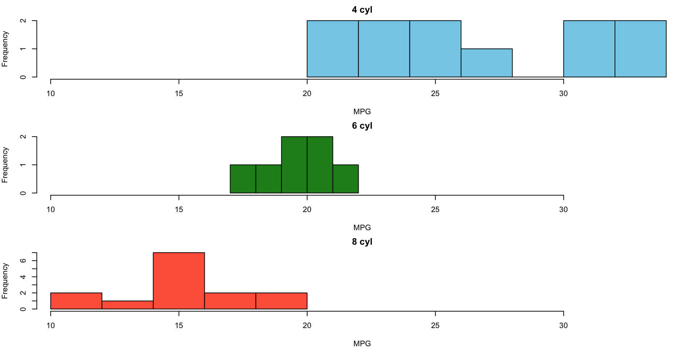

Mathematical Statistics
We will investigate:
\[
S(c) = \sum_{i=1}^3 (x_i - c)^2 \quad \text{for } x_1 = 4,\ x_2 = 7,\ x_3 = 10
\]
Choose a value for \(c\) (e.g., \(5,\ 6,\ 7,\ 8\)). Compute \(S(c) = (x_1 - c)^2 + (x_2 - c)^2 + (x_3 - c)^2\). What do you notice?
Try to guess the value of \(c\) that minimizes \(S(c)\). Why does that value make sense?
Optional extension: Expand and simplify \(S(c)\) algebraically. Can you take its derivative?
What do you think this says about the mean as a “best” measure of center?
Use R to read the data into a dataset called eg1p20.
Our Data: A sample of \(n\) observations \(x_1, x_2,\ldots, x_n\) on the random variable \(X\).
Definition
The mean \(\bar{x}\) of the \(n\) values \(x_1, x_2, \ldots, x_n\) is given by: \[ \bar{x} = \frac{\sum_{i=1}^n x_i}{n}. \]
Definition
The median of the \(n\) values \(x_1, x_2,\ldots, x_n\) is the value that most nearly lies in the middle with half the values smaller and half larger.
Tip
Try this: Investigate the properties of the Mean and Median using Moore’s applet
The median is preferred over the mean when a robust measure of center is needed.
Definition
The trimmed mean removes a fixed proportion of the smallest and largest values from the data, then computes the mean of the remaining values.
In R:
Definition
The range is a single number:
\[\text{Range} = \max(x_i) - \min(x_i)\]
Definition
The standard deviation \(s\) of the \(n\) values \(x_1, x_2, \ldots, x_n\) is given by: \[ s = \sqrt{\frac{1}{n - 1} \sum_{i=1}^n (x_i - \bar{x})^2} \]
The sample variance is \(s^2\).
Definition
The fourth spread \(f_s\) is John Tukey’s robust measure of variability defined: \[ f_s = h_u - h_l \]
The fourth spread \(f_s\) is:
The range of the middle half of the data.
Unambiguous and easy to calculate by hand for small datasets
Very similar to the Interquartile Range
mpg by cyl in mtcarstapply() → compact results, one stat at a time, useful in scriptingby() → readable summaries for each groupaggregate() → clean tabular format, good for displaying multiple summaries together
# Save original graphical parameters
op <- par(no.readonly = TRUE)
# Layout: 3 rows, 1 column
par(mfrow = c(3, 1), mar = c(4, 4, 2, 1))
# Common x-axis limits
xlims <- range(mtcars$mpg)
# Histograms for each cylinder group
hist(mtcars$mpg[mtcars$cyl == 4], main = "4 cyl", xlab = "MPG",
xlim = xlims, col = "skyblue")
hist(mtcars$mpg[mtcars$cyl == 6], main = "6 cyl", xlab = "MPG",
xlim = xlims, col = "forestgreen")
hist(mtcars$mpg[mtcars$cyl == 8], main = "8 cyl", xlab = "MPG",
xlim = xlims, col = "tomato")
# Restore original settings
par(op)Analyze the built-in iris data set.
Browse help using ?iris. (Find pictures of irises:)
Investigate petal width using methods from class including data display and summary statistics.
Explore the relationship between petal width and species.
summary(), fivenum(), and boxplot() support both numeric and visual analysistapply(), by(), or aggregate() to compare summaries across subgroups